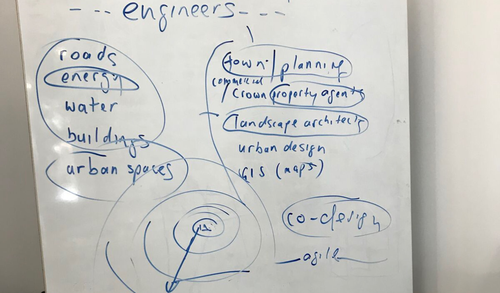
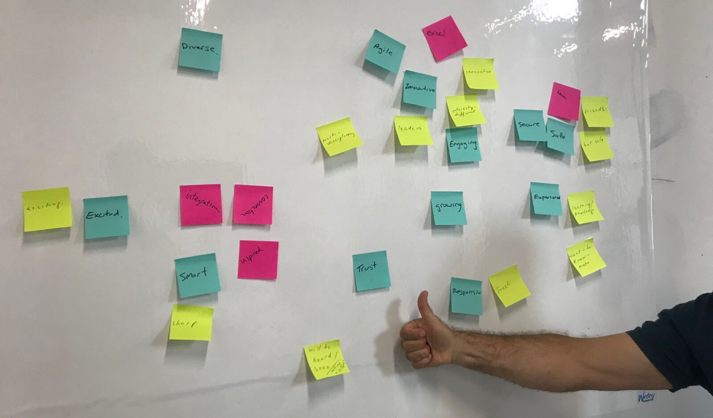

Andi Parker.
Right back to the drawing board.
I was asked to help Align redesign their website with a fresh new approach, leading to a fresh new look, while keeping the core of their style and sensibilities.
Excited by the opportunity to start from scratch, we organised 2 initial workshops to establish how a new website could convey Align's purpose for existing, desired outcomes for its clients and capture the unique flair they bring to each of their projects.
Initial scribbles from Align's bossman.
A post-it per perceived company value – I like to think the thumbsup was meant for me.

Dot votes to see where the focus should be.
Once the focus was set, it was time to get into wireframing (a basic design without any colour or styling) in order to get a feel for the content, layout and flow of information. One of the major decisions was to use elements of undesign (a seemingly, and somewhat ironically, unaligned and random display of elements on the page) for the new website's style, to reflect the out-of-the-box thinking Align takes with its projects.
© Andi Parker. All rights reserved.